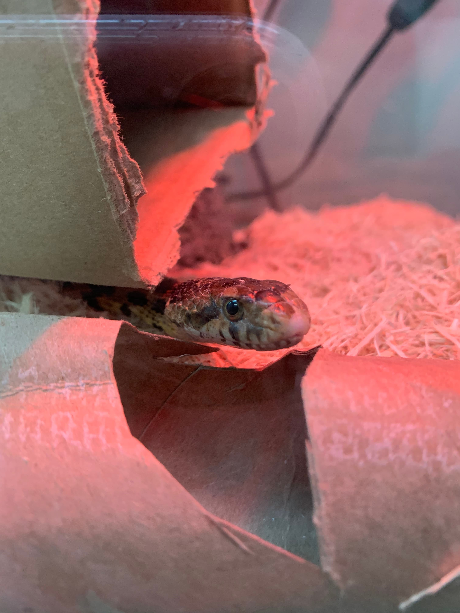

Myths About Urban Wildlife
Explore common misconceptions about wildlife and what current understanding tells us instead.
Myth #1: Touching a Baby Animal Causes Abandonment
Reality:
In most cases, animals do not abandon their young due to human scent. For example, with baby birds, if you find a chick that has fallen from the nest, and you can safely reach the nest, you can place it back (gently and carefully). A makeshift nest—such as a small plastic container with nesting material inside and holes for drainage on the bottom—can also be used if the original nest is unreachable.
Similarly, many mammals, such as squirrels, will often return to their young even if humans have briefly touched them. However, with raccoons, it can take time—mother raccoons sometimes have multiple dens and may move their babies one at a time. This process can take a few days, so if you’ve seen a baby alone, it’s best to monitor from a safe distance for a day or two. The mother may still return.
It's important to note that opossums are unique: their mothers do not return to them once separated. In fact, it is critical not to try to reunite baby opossums with their mother, as the mother will not come back. Opossums have short breeding cycles, and this is part of their survival strategy—focusing energy on reproducing rather than returning to orphaned young.
If you suspect a young opossum is orphaned, contact a licensed wildlife rehabilitator immediately. Feeding or hydrating them yourself, especially with human or pet formulas, can do irreparable harm.
Myth #2: Wild Animals Are Naturally Aggressive
Reality:
Wild animals typically avoid humans whenever possible. Aggressive behavior is often a defensive response—when animals feel cornered, threatened, or when their young are in danger. For example, raccoons, foxes, and even squirrels may bite or scratch if they are approached or handled. Importantly, intentionally harming or provoking these animals is not only dangerous, but in many cases, it is illegal. Laws such as endangered species protections, nesting season restrictions, or state permits apply. It’s crucial to avoid provoking wildlife—doing so not only puts you at risk but can escalate the animal’s stress response, making them more reactive. If you encounter an animal behaving defensively, keep a safe distance, avoid sudden movements, and contact a wildlife professional if needed.
Myth #3: Relocation Solves the Problem
Reality:
Relocating a wild animal may seem like a simple solution, but it often significantly reduces the animal’s chance of survival. Wild animals rely heavily on their familiar home range to find food, water, and shelter. When displaced, they are placed in unfamiliar territory where these resources are unknown, increasing the risk of starvation and dehydration. They may also face new predators they are not accustomed to avoiding, as well as territorial conflicts with animals already established in the area. Together, these pressures can lead to serious stress, injury, or death. It also creates a temporary void that other animals will quickly move into, so relocating a wild animal will not solve the original problem you may be facing.
Rather than relocation, the most humane and effective strategy is to address what is attracting the animal in the first place, such as unsecured trash, accessible food sources, or potential entry points. In many cases, mother animals such as squirrels or raccoons may also be relocating their young over time, so patience is often an important part of the process. Humane deterrents can then be used to gently encourage the animal to move on. Click here for examples of humane deterrents. If these methods are not effective, or if you are unsure how to proceed, contacting a licensed wildlife rehabilitator is recommended. They can assess the situation and provide safe, case-specific guidance tailored to your encounter.
Myth #4: Feeding Wildlife Helps Them
Reality:
Feeding wild animals can harm them in several ways. It disrupts their natural foraging behavior, can lead to nutritional deficiencies, and increases the risk of disease transmission.
Feeding wild animals can cause more harm than good, especially when done without professional guidance. Baby animals, in particular, have very specific dietary needs. Human, cat, or dog formula can be extremely dangerous; it lacks the proper nutrients for wild species and can cause digestive distress, aspiration, or even death. Similarly, even adult animals—like deer—can be harmed when fed the wrong foods. For example, dog food or bird seed is too high in protein or calories and doesn't meet their natural nutritional needs.
Additionally, feeding birds is risky because it can disrupt migration patterns. Birds that rely on supplemental food sources may not migrate as they should, which can lead to starvation when food runs out. Disease is another major risk. Sick birds congregating at feeders can transmit illnesses like avian flu, which can spread to other birds—and even other animals, like foxes. If you want to help wildlife, avoid feeding them. Instead, provide natural habitat—like native plants—and always contact a licensed wildlife rehabilitator for appropriate care. You can find a directory of rehabilitators by visiting the Humane World for Animals wildlife rehabilitator directory. Only trained professionals can ensure animals get the proper care they need.
Myth #5: Wild animals can be kept as pets if found as babies
Reality:
In some states, it is legal to temporarily hold sick, injured, or orphaned wildlife for a short period of time (often 24–48 hours) for the sole purpose of transporting them to a licensed wildlife rehabilitator. However, it is illegal in most places to keep wild animals long-term without proper permits, as they require specialized care that cannot be replicated in a home environment.
Because wildlife regulations vary by region, it is important to be aware of your local or state wildlife laws before interacting with or handling wild animals.
When wild animals are raised by untrained individuals without knowledge of proper wildlife development, they often fail to learn essential survival skills such as foraging, hunting, species-appropriate feeding, and predator awareness. These skills are critical for survival in the wild and cannot be reliably developed outside of a structured rehabilitation setting.
In contrast, licensed wildlife rehabilitators are trained to raise animals using species-specific protocols that support natural behavior development. When care is provided correctly, many animals are successfully prepared for release, and these developmental issues are far less common.
Animals that become habituated to humans may also lose natural fear responses, which can make them unsafe for release and lead to long-term dependency or behavioral issues.
Wild animals are not domesticated species. Without proper rehabilitation, they cannot develop the instincts and behaviors required for survival in the wild.

Example of an eastern fox snake that was raised in captivity by a member of the public after being found as a juvenile. Without species-appropriate rehabilitation, it did not develop natural hunting and survival behaviors, requiring long-term care in a controlled setting rather than release.
Understanding wildlife behavior helps reduce fear and supports more effective, humane responses. When in doubt, it’s always best to observe from a distance and contact a wildlife professional who can guide you on appropriate next steps.